Brian Hockenmaier
This page details out some of my professional projects pre-2018.
After the work shown here, I was focussed on spinning up a new "Custom Development Center of Excellence" with the aim of developing more of our applications in-house rather than farming them out to outside talent and offshore firms. In this role I oversaw the work of 100+ engineers and QA testers both onshore and offshore, but my own focus was spread quite thin, which wasn't sustainable or satisfying for my work style.
After that period, starting mid-2021, I led the "Rights and Contracts Engineering" team, which comprises a much more manageable group of ~25 software engineers, most of whom I was able to hire directly as full time staff. This team builds and maintains more than 10 apps involved in creating and managing our company's IP rights data, and has resulted in one major new destination web platform known as AllRights.
To see a more comprehensive list of software developed and owned by only me, visit my VR studio's website and my solo dev portfolio linked at the top of the page.
This list is only a sampling of my pre-2018 work that I can share. To see my full professional history, visit my
linkedin.
Projects:
Sphere, a large scale custom billing & ledger system for Studio Operations
Analytics for Studio Operations, an analytics and reporting system combining data from many different business units
NewsFiles, an inventory management system for NBC News
Sphere was an in-house custom software build replacing a legacy AS400-based system. It was the final piece of the puzzle
in an organization-wide program called "Request to Billing" which revamped and expedited processes of Studio Lot operations all the way from
the first customer request to the final bill issued.
My Role
- Product & Project Manager - Defined scope, engaged with business to set priority, wrote user stories
- Engineering Manager - Hired engineers, assigned work to engineers & QAs
Time
March 2016 - Feb 2018
Organization
NBCUniversal Studio Operations
Team
8 Engineers, 4 QA, 1 Analyst, 1 UX
Budget
~$4MM
Result
- Replaced 20-year old AS400 system with modern web architecture (Java Spring, angular.js, MySQL and SOLR)
- Over 4000 features, bugs, and tweaks documented and executed
- Process improvements throughout the product enabled over 200K annual productivity benefits
Key Skills
- Product Management
- Project Management
- Software Engineering Management
- Change Management
- Cross-Functional Team Management
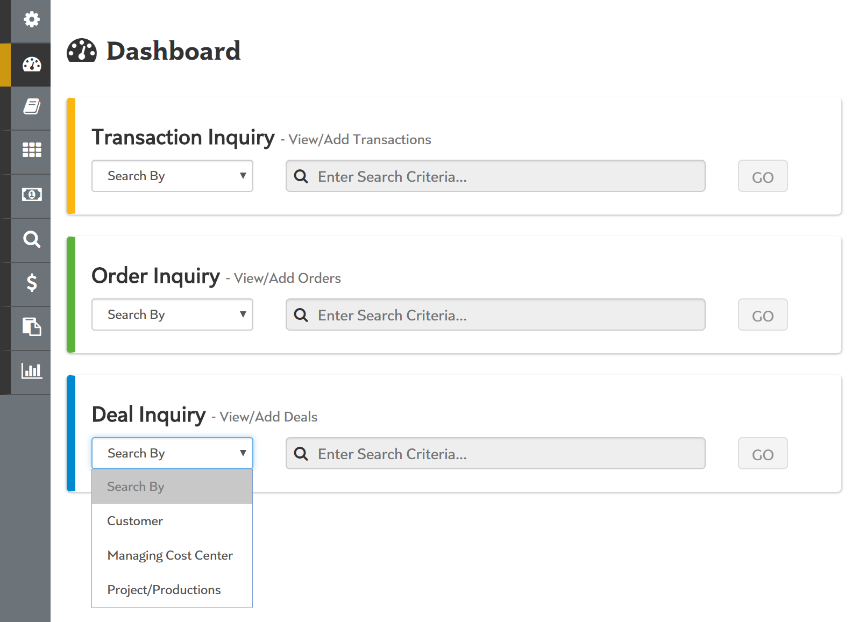
Dashboard landing screen containing links and direct searches for most-used features
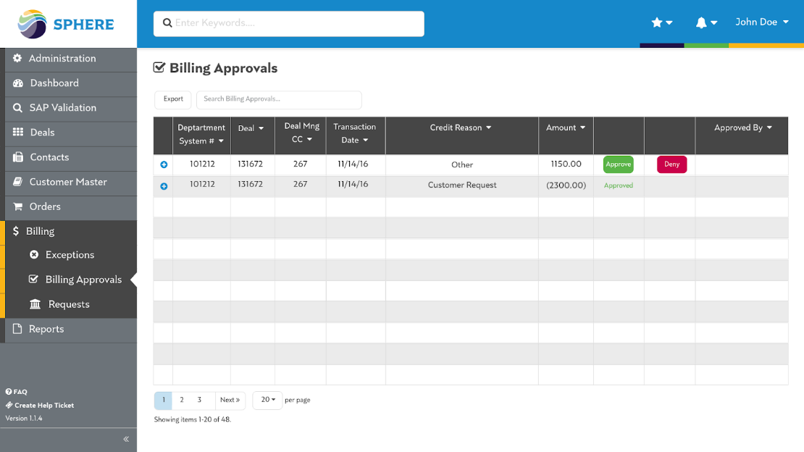
Process improvement eliminated 4 approval steps from previous system’s workflow
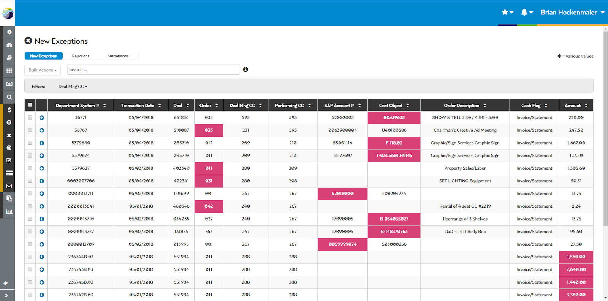
Process improvement eliminated manual file upload step, replacing it with an automated workflow that only notified users when they needed to resolve an exception
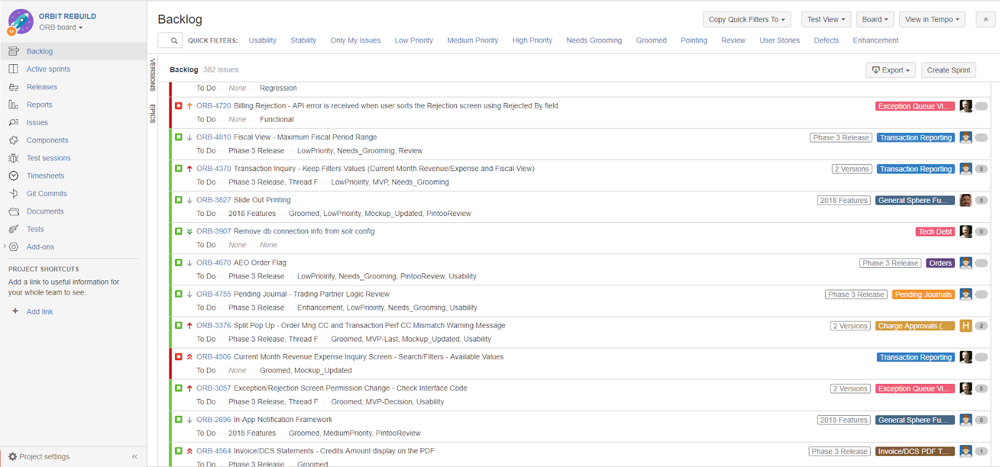
Jira backlog created and managed to track the work of 12 Engineers and QAs at project peak
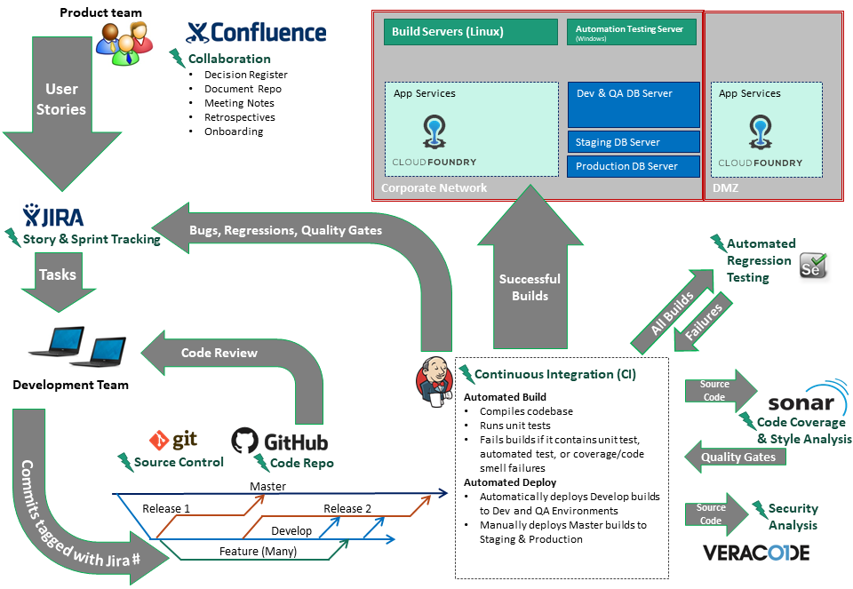
Development Operations process created for Sphere
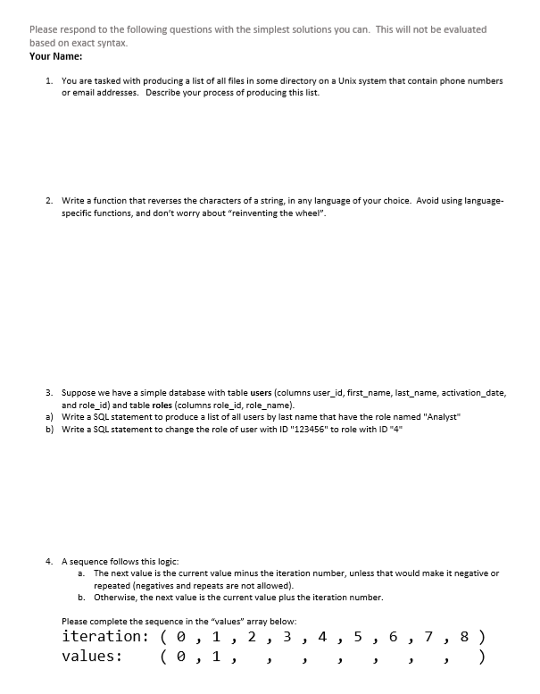
Quiz created to test for basic software engineering proficiency
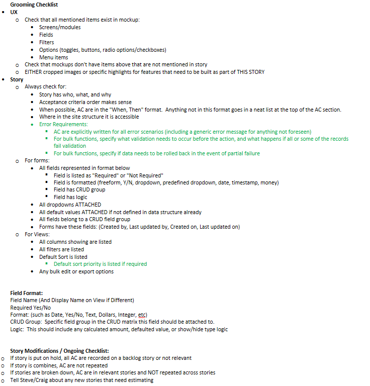
Grooming checklist created as a training tool for analysts and UX designers
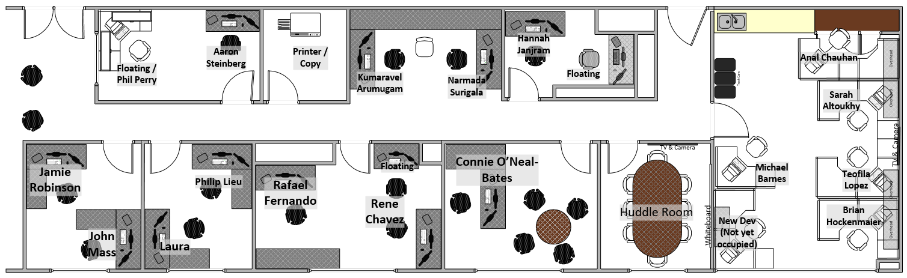
Floorplan designed for our Sphere team shared space
Creating and internally promoting a new analytics system was one of my first major projects at NBCUniversal.
The Studio Operations business was one with a tremendous amount of transactional data, but no way to report
on it in an apples-to-apples way. My work involved finding the useful data, building the technical
capability of serving it, and making sure users were happy with the result.
My Role
- Project Manager - Figured out business priorities, set up servers and managed technical go-live, on-boarded consultants to enhance and maintain system
- Developer - Learned Qlikview and other tooling from scratch and built several initial dashboards with data from databases across the studio
Time
Winter 2013 - Spring 2017
Organization
NBCUniversal Studio Operations
Team
2 BI Developers
Budget
~$500K
Result
- Business Intelligence capacity previously missing in Studio Operations
- Over 40 dashboards created
- ~10 automated email reports
- Over 15 internal and external systems loading nightly
Key Skills
- Analytics Development
- Database Design
- Project Management
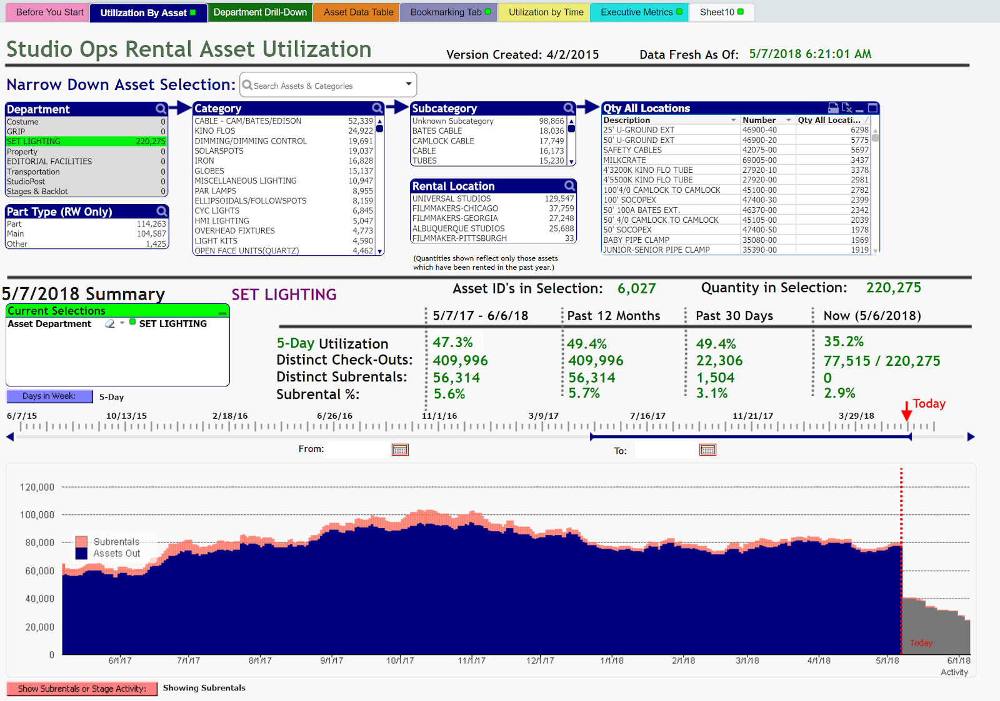
The Asset Utilization Report, one of my first dashboards created and later expanded to almost all Studio Operations Departments. This provided these rental businesses with a key performance indicator (metric) to which they previously had no access
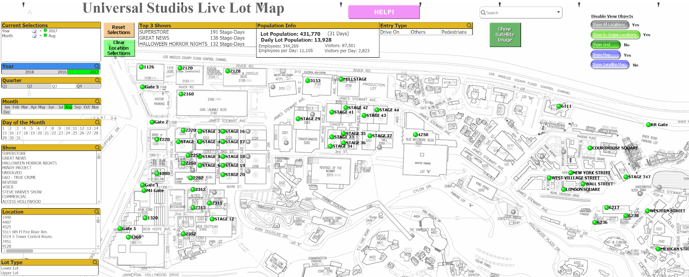
The Live Lot Map, a first ever visual take of live security data on the Universal Lot
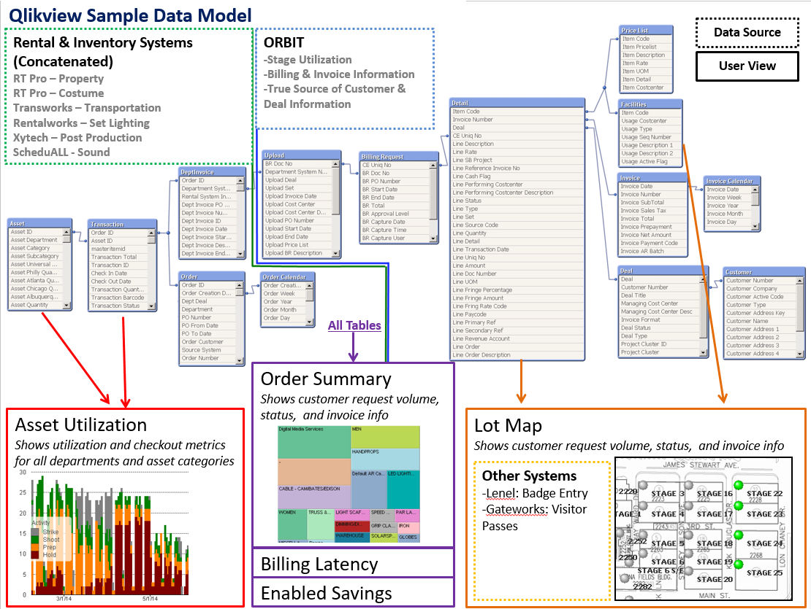
Initial data model created, later expanded to include most rental, financial, security and facilities data within Studio Operations
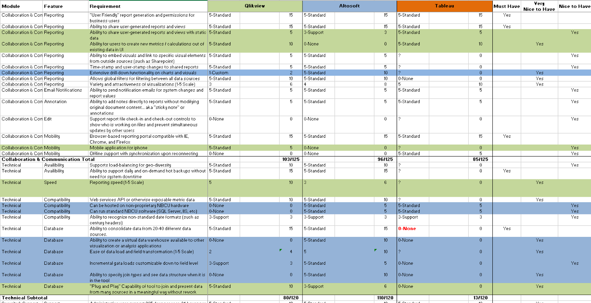
Decision matrix created to pick Studio Operations BI tool
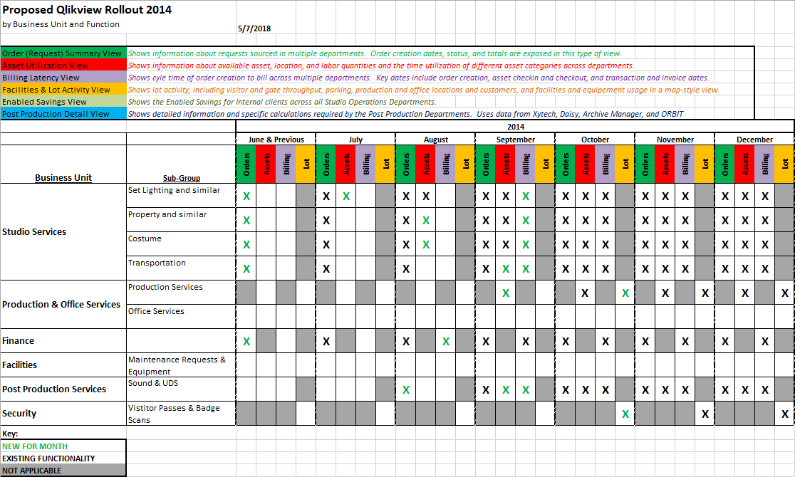
Simplified executive rollout plan across departments and data types
NewsFiles was a drupal-based inventory and order management system that I developed and launched within the NBC News organization in order to track incoming "file ingest" jobs.
This system replaced a legacy paper-based order management process and helped the News organization move from tape-based to file-based ingest for field news content.
This system relied on a novel QR-code based ID system that allowed storage devices (hard drives and flash cards) to be tracked, reducing loss and waste.
Additionally, QR codes could be scanned with smartphones, triggering dynamic workflows based on the current system status of the device.
My Role
- Sole Developer - Learned Drupal, built and launched web app with little assistance, developed QR code tracking system, ordered and tagged 1000's of devices with codes
- Project Manager - Identified and pitched project, set up servers and managed technical go-live, on boarded consultants to enhance and maintain system
Time
2011-2012
Organization
NBC News
Team
None
Budget
None (other than ~$100 yearly hosting)
Result
- New order management web application for NBC News, replacing paper process
- New QR-code based tracking system for company-owned hard drives and flash cards
- Hosted externally with NBCU SSO integration
Key Skills
- Web Development with Drupal
- Product Management
- Project Management
- Change Management
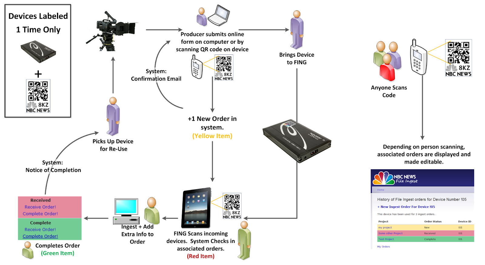
The full process flow implemented in Newsfiles, which enabled digital order management and device tracking as an organizational first